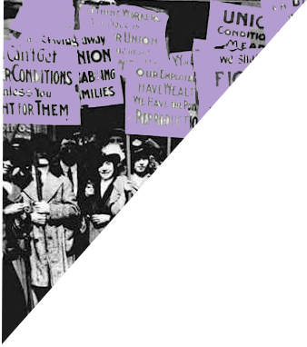

La igualdad llegará cuando una mujer tonta pueda llegar tan lejos como hoy llega un hombre tonto” - Estelle Ramey (Endocrinóloga)
Ninguna mujer tiene un orgasmo abrillantando el suelo de la cocina” - Betty Friedan (Teórica y líder feminista estadounidense)
Los hombres temen que las mujeres se rían de ellos. Las mujeres temen que los hombres las asesinen” - Margaret Atwood (Poetisa y novelista)
Todas y cada una de vosotras podéis ser líderes y apoyar a otras para lograrlo” - Michelle Obama (Abogada y ex primera dama)
Ignoramos nuestra verdadera estatura hasta que nos ponemos en pie” - Emily Dickinson (Poeta estadounidense)